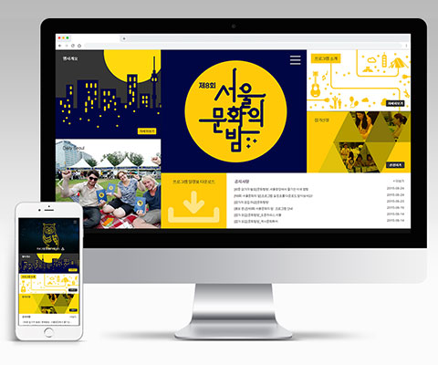
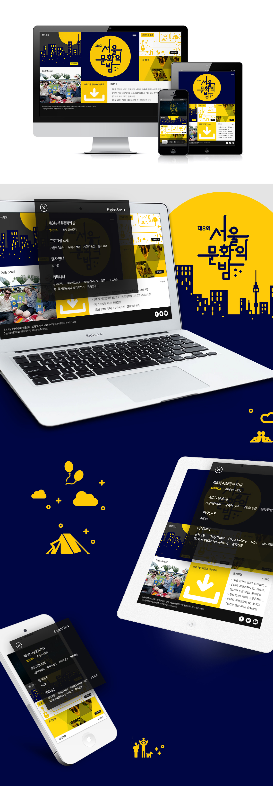

제8회 서울 문화의 밤
- 작업기간
- 2주 내외
- 작업범위
- 반응형 Web 사이트 디자인 신규
- 작업참여도
- Web 디자인/퍼블리싱 100%
- 코멘트
-
제8회 서울 문화의 밤 반응형 Web 신규 디자인 입니다.
대분류 메뉴를 블럭화시켜 심플하게 디자인함으로써 사용자의 접근성이 용이하도록 유도하였습니다.
PC, 태블릿, 모바일 디바이스별 화면에 맞추어 구현되도록 반응형으로 디자인하였습니다.
야간에도 문화(미술, 음악, 공연 등)를 즐긴다는 모토를 바탕으로 주로 밤 이미지를 사용하였습니다.
간결하면서 정확한 내용 전달을 위해 텍스트는 최소한 사용하고 플랫 아이콘을 활용하였습니다.
